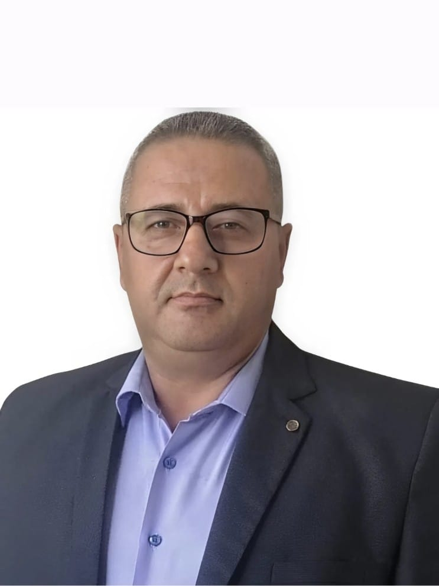
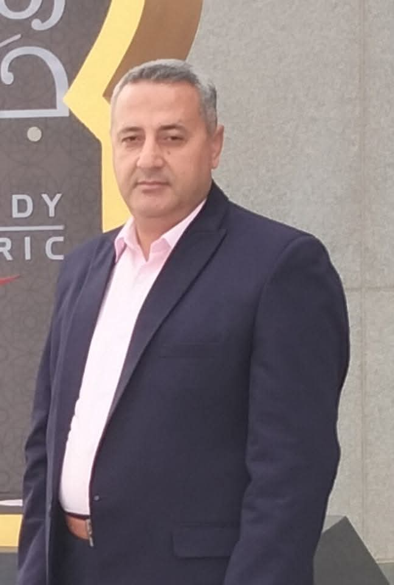
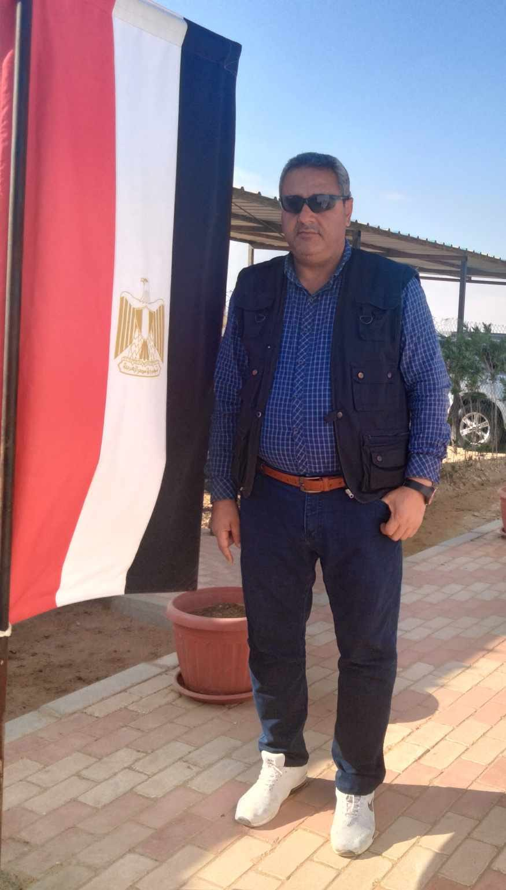
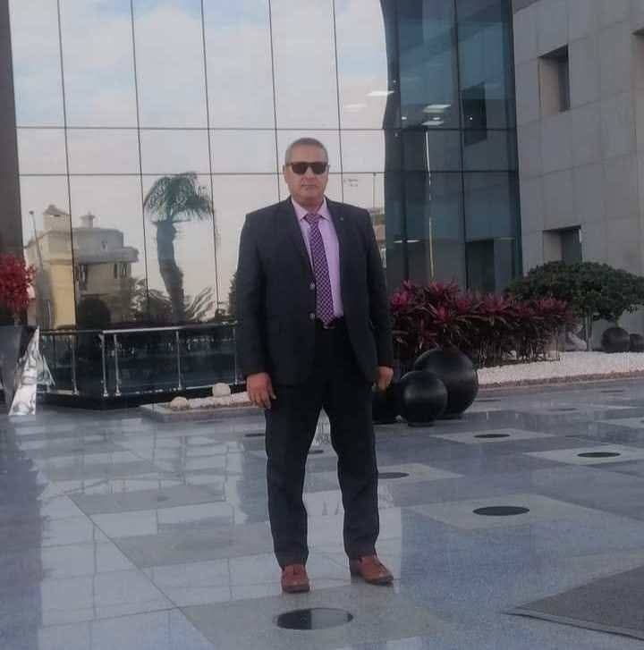
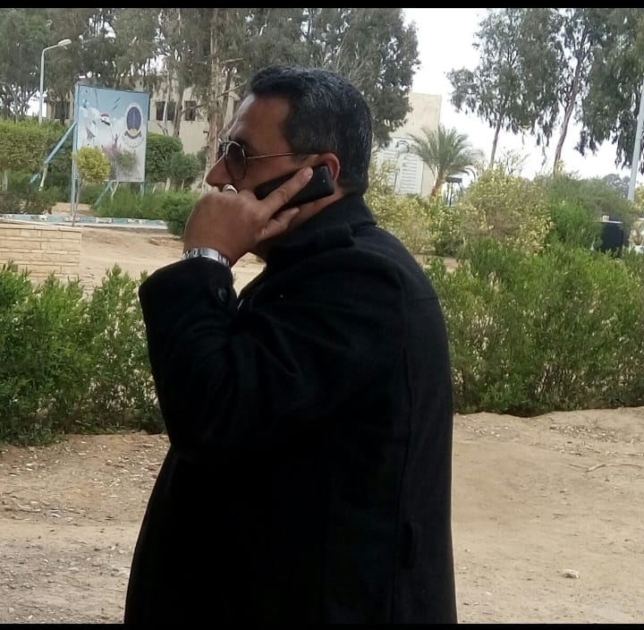

Mr. El-Sayed Amin
🔐 Security Supervisor
👤 Profile
Experienced security manager with over 20 years in operations, public relations, and safety. Skilled in team leadership, facility protection, training, and strategic supervision. Known for professionalism and effective coordination under pressure.
🛡️ Professional Skills
- Security Management & Risk Control
- Safety & Firefighting
- Public Relations & Communication
- Team Leadership & Crisis Management
- Training & Supervision
- Recruiting & Managing Security Staff
📂 Career History
- Security Supervisor, Elsewedy Electric Infrastructure – Mostakbal Misr (2023)
- Security Supervisor, JVACEE – Julius Nyerere Project, Tanzania (2019–2023)
- Field Security Manager, Elsewedy Electric PSP – Beni Suef (2018)
- Security Officer, Egyptian Armed Forces (1991–2016)
📸 Work in Action




📚 Education & Info
- 🎓 Diploma – Industrial Secondary
- 🗓️ Date of Birth: 13/04/1975
- 👨👩👧👦 Married with 4 children
- 🌍 Nationality: Egyptian
- 🧭 Place of Birth: El-Gharbeya
- 🎖️ Military Service: Completed
- 🆔 National ID: 27504131601638
- 🕌 Religion: Muslim